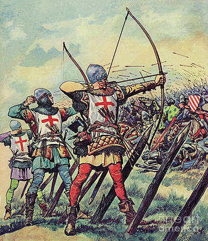

Hosszúíj

Egyik pozitívuma az, hogy egyetlen darab fából el lehet készíteni, ezért könnyen hozzá lehetett jutni. Ezek az íjászok lándzsásokkal és földbe szúrt hegyes fadarabokkal voltak védve a lovasságtól és a gyalogságtól egyaránt, hiszen közelharcban hátrányban lennének még akkor is, ha van náluk egy extra fegyver.